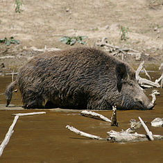

Divlja svinja (lat. Sus scrofa), bliski je rodak domace svinje, živi u coporima uglavnom oko vlažnih šuma. To je krupna divlja životinja koja se dosta lovi jer je u nekim zemljama (npr. Srbiji) jako brojna. Za tu brojnost je zaslužan veci broj mladih i vrlo malo prirodnih neprijatelja. Izuzetno brzo trci, ali dobar je i plivac. Odrasli primjerci mogu biti visoki od 90-100 cm, a dugacki od 120-160 cm.Masa im varira ovisno koje je godišnje doba i može prijeci 300 kg kod mužjaka - vepra, dok ženke mogu biti teže od 150 kg. Ženke postaju spolno zrele s 10 mjeseci, a mužjaci nekoliko mjeseci kasnije. Medutim, ne pare se prije navršenih 18 mjeseci, osim ako nije došlo do poremecaja prirodne ravnoteže. Zubi, ocnjaci, su tako postavljeni u vilici da se donji, ocnjaci, uvijek preklapaju s gornjim zubima. Na taj nacin zubi se oštre. Dugi su 28cm, nazivaju se brusaci i sjekaci.Kod mužjaka se nazivaju kljove, i znatno su veci, a kod ženke klice, i manje su nego kod mužjaka. Velicina kljova mužjaka ovisi o njegovoj starosti, što je svinja starija ima vece i oštrije kljove.
| Divlja svinja |
|---|
|  |